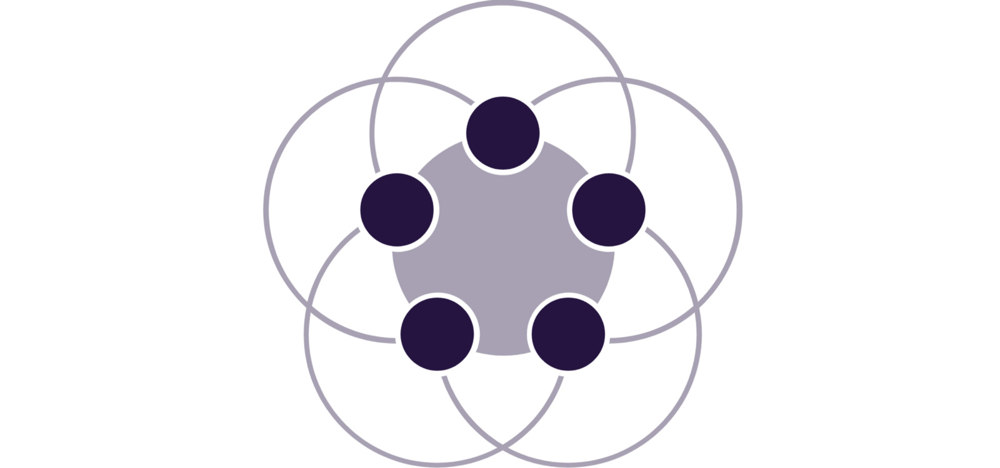

If you’re already familiar with MESG, you can jump into the Building a Blog tutorial (very soon), right away!

With MESG, you can build applications that easily connect any technologies together, including any blockchains or Web APIs. Imagine the possibilities of any technology connecting to anything else with data through a decentralized network.
There has never been a solution quite like this before.
Introduction to MESG
Since the early days of computers, we never had a fixed definition about how services should communicate with each other through the network.
This negative adoption from the past even limits us with today’s microservices methodology. Microservices bring a great value to software ecosystem by proposing how services should be kept small and be dedicated. But it is still lacking on the reusability side because, it doesn’t bring a standard for how services should communicate with each other through the network.
So far, we haven’t had a chance to create reusable services that doesn’t necessarily require some modifications on their network layers. A service needs to be refactored to be compatible with just an another communication protocol adopted in the product where it’s being used.
Assume that you already have some functional services that you’ve created before for your previous products. Let’s say that some of these services expose their functionality to network via http endpoints and some others maybe use gRPC , JSON-RPC , GraphQL or even a custom communication protocol over TCP .
To be able to use these services together in a new product, you must create an environment to support their varying network communication protocols or refactor them to force a single standard and build a messaging protocol on top of that.
Meanwhile, you have to figure out how to solve service discovery, load balancing and security problems to run and scale your services seamlessly.
Instead of just focusing on the features that actually matters for your product, dealing with things that aren’t related is a big waste of development hours!
Quoted from Morpheus
So, why not to define a standardized communication protocol where it opens up the opportunity to create reusable services?
MESG solves this problem by creating an emerging standard for services and introduces workflows for defining how data should flow between the services.
Alongside creating a well-defined network communication protocol for services, MESG even lets your services to run in a decentralized way and manages network, service discovery, load balancing and security natively with the power of container technology.
MESG’s Core is responsible for running services & workflows in a decentralized way. It runs as a daemon and it can be deployed to any peer in the network for enabling decentralization. Even Core itself consists of a bunch system services which enables the possibility of its own decentralization in the network.
Reusable services aren’t a myth anymore thanks to MESG! You can check out the existing ones on service market, even create yours for other’s use and earn some MESG tokens on the way! Shh… We’ll talk about blockchains later…
An amazed Doge
If we had had this standardization and service market from the beginning of the internet, we wouldn’t have needed to create services from scratch. Reusing services that easy surely could’ve moved humanity forward for decades by preventing all development hours to be wasted!
Check out mesg.com and the documentation on the website for getting to know more about MESG!
Services
Services are small, focused programs that implements target functionalities. To expose these functionalities to the network for other’s use, their capabilities needed to be defined in a standard format.
MESG introduces mesg.yml to exactly meet this need. In this configuration file, you can define the schema of tasks that your service is capable of executing and the type of events that your service may emit. You can also specify dependencies, data volumes, scalability properties, network configurations and other primitives that describe how your service should run.
MESG adopts event-orientation from its roots. Services’ tasks and events are specially designed with asynchrony first in mind. This fits well with the asynchronous world of services. It lets you to easily create reactive applications that connect any services by using workflows.
Think of tasks as a superset set of RPCs, but MESG is event-oriented, which means a task’s outputs emit asynchronously once its execution is finished.
Events are a new concept that MESG introduces to the service world. They’re very handy to broadcast bits of data that can be useful for other services in the network depending on your application logic. Events can be emitted inside services as part of their business logic and handled by workflows. Task executions, on the other hand, are performed by workflows on services and their outputs again, are handled by workflows.
As you see, services can be only connected through workflows and they’re not aware of each other.
Let’s examine the webhook and discord services to get some ideas:
In the webhook service’s mesg.yml file, we have the request event definition with data and headers payload.
The request event is emitted on every post call to the /webhook endpoint while the headers and body of each http request is used as its data. You can check the corresponding http handler to see it in code.
In the discord service’s mesg.yml file, we have the send task that takes an email and a sendgridAPIKey as its input data. It has two different outputs as success and error . If sending invitation is successful it’ll emit the success output with code and message output data otherwise error output with an error message . You can see how easy its implementation is in code.
Check the discord-invites workflow shared in the Workflow section below to see these services in action.
Workflows
One of the visions of MESG is to allow people, even non-programmers to create applications without writing a single line of code. This is possible with workflows by connecting pre-created services in the market. It’s also possible to create workflows easily via a user interface where you connect data dots from various services to describe the flow in between them.
Workflows can be considered as configurations that describe how data should flow between services.
Basically, workflows are used to define conditions for executing some tasks. These conditions could depend on different task outputs and events from various services. Services are metaphorically connected with each other through workflows.
You can define patterns to match with task outputs and events from various services that your application needs, manipulate their payload and meta-data and execute a chain of tasks from multiple services in the network by using this data as task inputs.
Workflows supports advanced data manipulation, filtering and parallel/serial task executions.
Workflows are like circuit lines that transfer data between circuit components but it’s for services
Let’s see how a basic workflow looks like over discord-invites workflow:
This workflow shares discord invites to people by sending emails. We use webhook and discord services in this workflow. You can read about them in Services section above to know exactly how they work.
Let’s see the when section of sample workflow. Every declaration about listening results, events and executing tasks should be made under when . On behalf of that, there are some other sections in workflow definition format to declare a name to workflow (name) , its description (description) , map of service names & their ID (services) and some constants (configuration) .
For this discord-invites workflow, there is a definition to listen for request events on the webhook service. So, when this event is received, we access its data with special $event.data variable and access to pre-defined configs in workflow with $configs variable to specify task inputs in the map section. Each field in map corresponds to a field of task’s inputs. In this case we’re mapping data to set email address and SendGrid API key as input data of the send task on discord service.
In conclusion, when a request event is received, send task will be executed with the dynamically-received email address from the request event’s data and statically defined SendGrid API key config. This flow will be circulated on every request event until workflow is deleted from Core.
You can also execute multiple tasks in series or parallel by adding more named executions under the execute section . It’s even possible to make executions which depend on each other by using the special dependsOn (very soon) section on each execution. Accessing the props of root event/result and inheriting task outputs from parent executions are also supported.
Check out the Quick Start guide to run Core on your machine, deploy & start webhook and discord services and run discord-invites workflow just in seconds!
Continue on Building a Blog tutorial (very soon) to see MESG in the real world!
Please be aware that some features talked in this blog post may not be fully implemented yet. Stay tuned and follow the latest development via the forum .